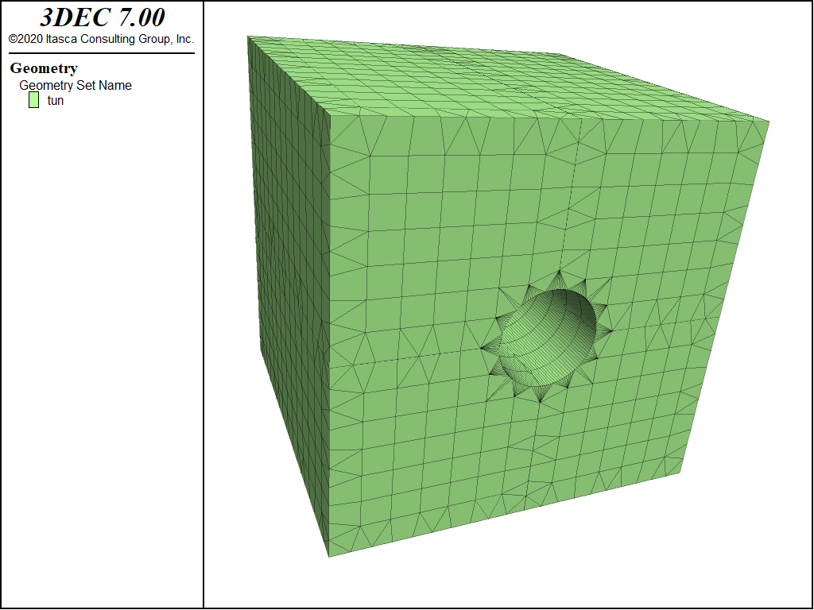
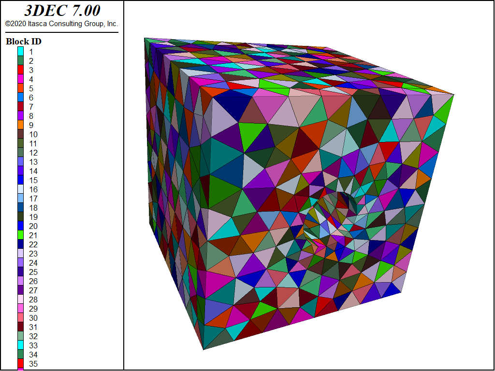
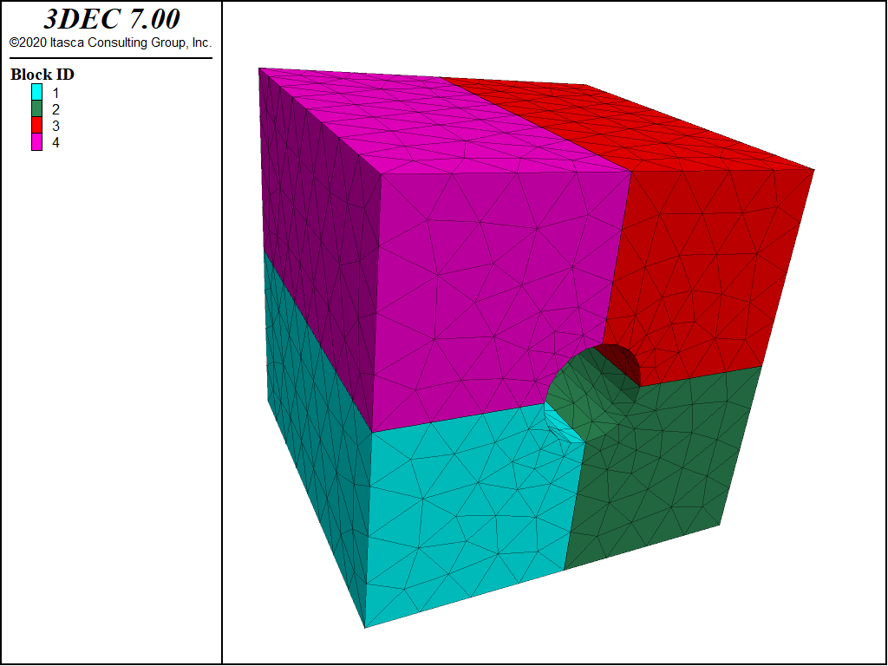
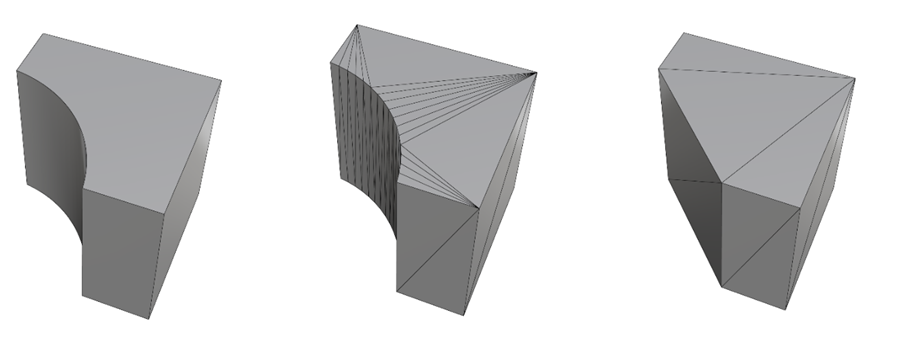
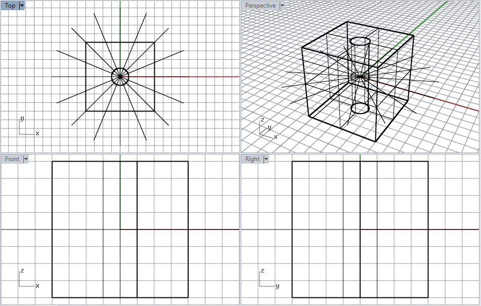
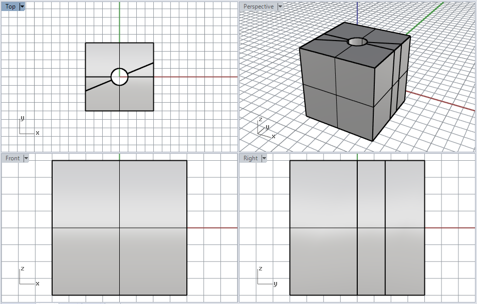
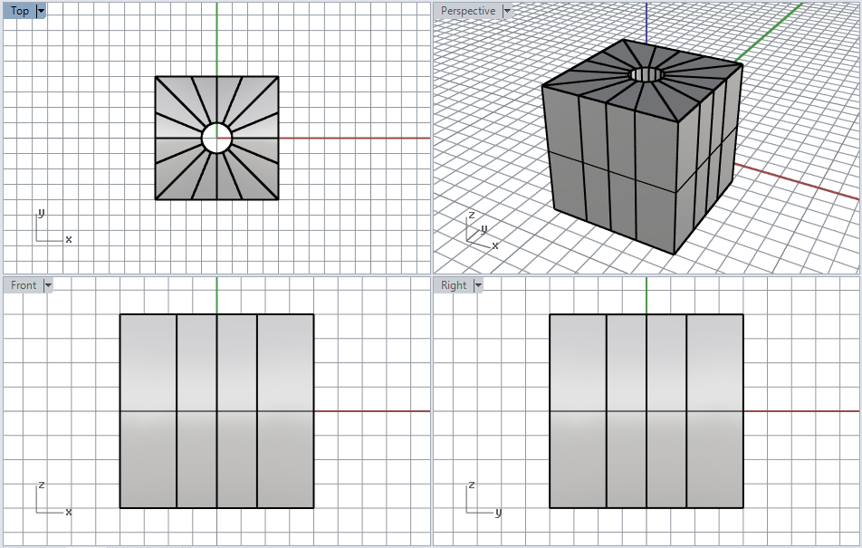
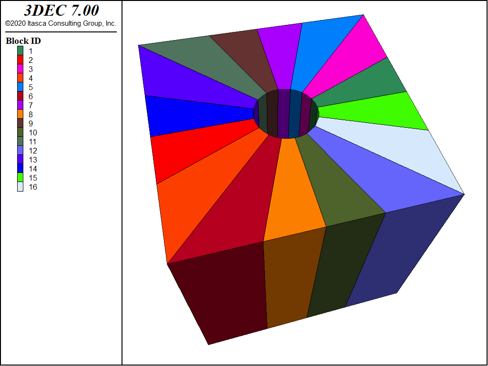
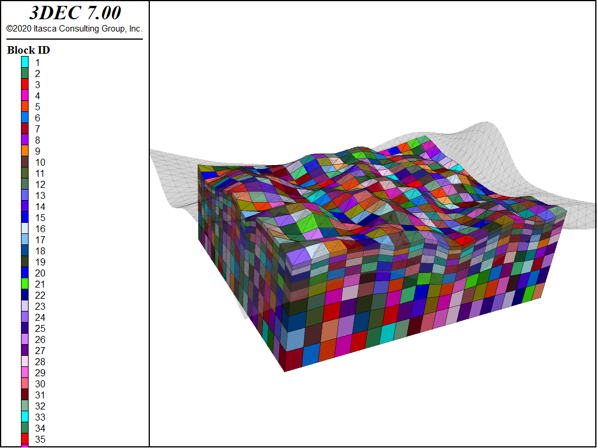

生成块体集合
上一节 i 创建单个块体（Creating Single Blocks）介绍了使用 block create 命令创建不同形状的单个块体。也可以使用 block generate 命令创建块体集合，以填充某个体积。后续各小节介绍 block generate 的不同用法。此处还介绍从第三方程序（例如 Griddle）导入和向其导出块体集合。
根据几何体生成块体
使用 按几何切割区块命令（block cut geometry） 命令切出复杂形状，可能产生许多几何形状不良的小块体，对模型运行时间和数值稳定性造成不利影响。另一种方法是用与体积边界匹配的四面体块体填充封闭体积，可通过 按几何集生成区块命令（block generate from-geometry） 命令完成。
用户必须先创建或导入表面几何体（见 i 几何体（Geometry））。表面几何体必须构成干净、无孔洞的封闭体积。随后用所需尺寸的四面体块体填充该体积。可以指定渐变，使块体随远离表面而逐渐增大：在细节丰富的表面处创建较小块体，在表面网格细节较少处生成较大块体。
下例给出一个简单示例。导入一个在箱体内定义隧道的 DXF 文件（图 1（Figure 1）），随后生成块体填充体积。指定最小边长为 2、最大边长为 5。还指定渐变系数 1.5：随远离细节丰富的表面，块体边长按 1.5 的比率增大。
生成的块体见图 2（Figure 2）。注意，块体不会自动连接。建议在生成后添加 block join 命令。
model new
geometry import 'tun.dxf'
block generate from-geometry set 'tun' ...
minimum-edge 2 maximum-edge 5.0 gradation-volume 1.5


图 1：用于创建隧道模型的几何曲面。


图 2：构成隧道模型的块体。
创建大量四面体块体并将其连接，效率可能较低。尽管已连接接触处会跳过接触计算，3DEC 仍需遍历所有接触，检查其是否已连接。程序还会为全部接触、面和重复网格点建立数据结构，导致模型占用更多内存。
可以不连接块体，而是将它们“合并”为单个块体内的网格单元。这比先创建块体、再连接并划分网格高效得多。在 按几何集生成区块命令（block generate from-geometry） 命令中添加 merge 关键字，即执行合并操作。如果导入几何体由多个封闭体积组成，则块体不会跨表面边界合并。该方法可创建由不同块体定义不同地层或开挖阶段的模型。
图 1（Figure 1） 中的几何体实际上由四个独立曲面组成，将隧道分成四个象限。在上述示例的 按几何集生成区块命令（block generate from-geometry） 命令中添加 merge 关键字，将得到图 3（Figure 3） 所示结果。3DEC 创建四个已划分网格的独立块体。这种方法的缺点是，块体一旦划分网格，就不能再切割。
有关 3DEC 合并逻辑的更多详情，请参阅 i 导入与合并（Importing and Merging）。


图 3：使用 merge 关键字时构成隧道模型的块体。
根据 VRML 生成块体
在 Rhino（Robert McNeel and Associates，2020）等 CAD 程序中，可以将实体导出为 VRML 2.0 文件。每个实体作为独立的 VRML“Shape”结构保留其独立性。换言之，Rhino 中的一组凸实体导出到 VRML 2.0 文件后，可通过 按 VRML 文件生成区块命令（block generate from-vrml） 命令转换为 3DEC 刚性块体。
创建 VRML 实体
用于导出到 3DEC 的实体必须为封闭凸体。以下是在 Rhino 中生成有效实体的一些提示。
- 在 Rhino 中分割一个实体，并不会得到两个实体。
Edit|Split或Edit|Trim命令作用于实体表面，因此生成的是不封闭曲面。使用Split或Trim后，还应使用Solid|Cap Planar Holes或其他方法将其封闭。 - 用
Solid|Solid edit tools|Wire cut代替Split或Trim，它始终会生成两个实体。 - 实体之间的布尔运算始终产生实体。
- 如果所需输出实体“接近”凸体，将其导出为 VRML 2.0 文件时，最好使用
Detailed Controls菜单，而非Simple Controls菜单。取消勾选除“简单平面（Simple plane）”之外的所有选项，将除“最小边长（Minimum edge length）”之外的所有数值设为零，并将最小边长设为较大值。这可确保实体的弯曲区域在 VRML 输出文件中变为平面（图 4（Figure 4））。


图 4：左：该实体不是凸体。中：VRML 导出过程中对实体进行面片化，但曲线被离散为多个线段，结果不是凸体。右：采用尽可能粗的面片化（较大的最小边长），得到凸体的 VRML 表示。
示例：块体中的钻孔
本示例逐步介绍如何在 Rhino 中用一组凸形状构建钻孔，随后将这些形状保存为 VRML 格式并导入 3DEC。Rhino 文件、3DEC 项目和 3DEC 数据文件位于 。
- 启动 Rhino，选择，按两个角点和高度创建。Rhino 将询问底面第一个角点的位置。
- 输入 -4,-4,-4（数值之间不留空格），然后按 Enter 键（:kdb:`Enter`）。Rhino 将询问底面另一个角点的位置。
- 输入 4,4,4。Rhino 将询问高度。按 Enter 键（:kdb:`Enter`），将高度设为与长方体宽度相同。这样创建一个 8 x 8 x 8 的长方体。
- 在顶视图（Top）中，选择，按圆心和半径创建。输入 (0,0,0) 放置圆心，然后输入 1 并按 Enter 键（:kdb:`Enter`），完成一个以原点为圆心、半径为 1 的圆。
- 选择圆，并在命令行输入
WireCut。 - 单击立方体，连续按三次 Enter 键（:kdb:`Enter`），将立方体分为两个实体。注意，圆仍处于高亮状态。按 Enter 键（:kdb:`Enter`） 删除它。
- 在顶视图（Top）中选择。输入 -8,0,0 作为直线起点，然后按 Enter 键（:kdb:`Enter`）。
- 输入 8,0,0 作为直线终点，然后按 Enter 键（:kdb:`Enter`），完成直线。
- 单击顶视图（Top）标签将其激活。选择直线，再选择（不是 Rotate 3D）。Rhino 将提示输入旋转中心（Copy）。
- 确保 Copy=Yes。如果不是，单击 Copy，让 Rhino 旋转直线的副本。Rhino 将询问旋转中心。
- 输入 0,0 作为顶视图（Top）中的坐标。Rhino 将询问旋转角度。
- 输入 22.5 完成旋转。按两次 Enter 键（:kdb:`Enter`）。
- 选择两个线段（按住
Shift键），然后选择。Rhino 将提示输入旋转中心（Copy）。确保 Copy=Yes。 - 输入 0,0 作为旋转中心。
- 输入 45 度作为旋转角度。按两次 Enter 键（:kdb:`Enter`）。此时应有四条直线。
- 选择全部四个线段，使用复制、粘贴（Copy, Paste）和旋转 90°，在顶视图中得到总共八个从原点扇形展开的线段（图 5（Figure 5））。


图 5：带孔块体，以及用于将块体切成等分部分的八个线段。
- 在顶视图（Top）中，选择水平线段（最先创建的线段）。选择。Rhino 将要求选择曲面。
- 仍在顶视图（Top）中，选择立方体。输入 <ENTER>。此时 Rhino 将询问第一个切割深度点（First cut depth point）。确保 KeepAll=Yes（如果不是，单击它，将 No 改为 Yes）。按 Enter 键（:kdb:`Enter`）。
- 在顶视图（Top）中，选择另一条线段（倾角为 22°），选择，再选择箱体上半部，然后按两次 Enter 键（:kdb:`Enter`）。
- 保持选择同一线段，再次选择，这次选择箱体下半部，然后按两次 Enter 键（:kdb:`Enter`），将下半部也切为两部分（图 6（Figure 6））。


图 6：使用第二条直线切割后的模型。
- 针对其余直线和实体重复使用 ，继续分割，直到得到 16 个部分（图 7（Figure 7））。


图 7：利用 Wire Cut，将带孔块体切割为 16 个相同部分。
- 选择这 16 个实体，使用，将实体导出为 VRML 2.0 文件。在 VRML 导出选项窗口中选择“version 2.0”。打开多边形网格（Polygon mesh）详细选项对话框时，取消勾选除“简单平面（Simple planes）”之外的所有选项，将除最小边长之外的所有值设为 0，并将最小边长设为较大值，例如 1000，然后单击
OK。以“hole”为名称保存文件。这将在工作文件夹中创建名为“hole.wrl”的文件。
- 启动 3DEC，按下述方式对文件“hole.wrl”运行 按 VRML 文件生成区块命令（
block generate from-vrml） 命令。最后绘制块体，查看模型（图 8（Figure 8））。


图 8：块体中钻孔的 3DEC 模型。
在 3DEC 中使用 VRML 文件的其他示例，见飞扶壁（Flying Buttress）和佛兰德式砌体墙（Flemish Wall）。
地表地形与面拉伸
3DEC 提供 按地形生成区块命令（block generate from-topography） 命令，可在已有网格的表面与表示地形的几何集合之间生成网格。块体通过将指定范围内的面沿射线方向拉伸至指定几何集合而创建。这可用于创建一系列不规则且互不相交的层，更常用于在顶部添加一层与不规则地形表面吻合的块体。下面给出一些简单示例。
要创建与地形表面吻合的网格，必须指定几何集合。创建几何集合最简单的方法是使用 导入几何对象（geometry import） 命令。此外，还提供其他命令，可操作边、多边形和节点，以及对整个几何集合执行其他操作。
使用 按地形生成区块命令（block generate from-topography） 命令之前，必须已有初始网格。仅选择同时满足以下全部条件的块体面：
- 面必须位于指定范围内。
- 面必须位于已有网格的表面，内部面一律忽略。
- 面的外法向矢量与射线的夹角必须小于 89.427 度。这将排除与射线平行的面（夹角为 90 度），以及朝向与射线相对相反方向的面（夹角大于 90 度且不大于 180 度）。
下例数据文件首先从 STL 格式文件“surface1.stl”导入几何数据，并放入名为“surface1”的几何集合。（默认情况下，几何集合名称与刚导入的文件名称相同。）随后创建分组名称为“Layer1”的背景网格。可以看出，若投影到 \(x-y\) 平面，几何集合将完全覆盖背景网格，因此范围内有效面上的任何节点，沿射线方向拉伸时都将与几何集合相交。
接下来添加 按地形生成区块命令（block generate from-topography） 命令。命令中指定“surface1”几何集合。未指定射线方向，因此采用默认方向 (0, 0, 1)。分段数为 8，所以会在所选面和几何曲面之间创建八个块体。比率设为 0.8，用于改变网格单元接近表面时的尺寸分布。本例每个网格单元的尺寸为下一个的 0.8 倍。新生成的网格单元将在“Default”槽位中赋予分组名称“Layer2”。将已有网格（分组 Layer1）顶面范围内的面，拉伸至几何集合。完成的网格见图 9（Figure 9）。几何集合的地形特征已正确体现在网格中。


图 9：拉伸块体以匹配导入表面几何体的 3DEC 模型。
model new
block create brick 0 15000 0 12000 -4000 -3000 group 'Layer1'
block densify segment 20 20 1
geometry import 'surface1.stl'
block generate from-topography geometry-set 'surface1' ...
direction 0 0 1 segments 8 ratio 0.8 group "Layer2" range p-z -3000
Voronoi 块体生成
生成 Voronoi 区块命令（block generate voronoi） 命令可创建随机 Voronoi 块体，填充由几何集合（封闭表面）定义的封闭体积。Voronoi 块体划分可用于模拟裂纹扩展。当 Voronoi 块体之间的节理强度被超过时，就发生“断裂”。
Voronoi 算法首先在几何集合表面及内部随机分布点。两个种子点之间的距离可通过关键字 maximum-edge 和 minimum-edge 控制。然后在全部种子点之间创建 Delaunay 三角剖分。最后，构造 Delaunay 三角剖分各线段的垂直平分面，创建 Voronoi 块体。块体在镶嵌区域边界处由几何集合截断。
注意，Voronoi 镶嵌仅适用于单个封闭凸体。还要注意，使用 生成 Voronoi 区块命令（block generate voronoi） 命令时，通常必须手动设置块体容差。这是因为默认容差根据第一个已创建块体的尺寸计算，并假定后续通过切割该块体创建模型。如果通过拼合多个块体创建模型，则默认值不适用。经验上，可将块体容差设为块体尺寸的 1%。
下面给出简单立方体和圆柱体的 Voronoi 块体集合生成示例。这些示例位于 。
model new
block tolerance 0.01
geometry import 'cube.dxf'
block generate voronoi set 'cube' min-edge 0.5 max-edge 1.0

model new
block tol 6e-5
geometry import 'cylinder.dxf'
block generate voronoi set 'cylinder' max-edge 0.006

块体导入／导出
除内置网格生成方法外，还可导入 3DEC 之外的第三方应用创建的网格。Griddle 1.0 生成的文件包含一系列用于创建刚性块体的 3DEC 5.2 命令。可使用内置转换工具转换这些命令，以创建 3DEC 7.0 模型。Griddle 2.0 及更高版本导出 3DEC 网格文件，以更加紧凑、易懂的形式表示块体。3DEC 网格文件也可以采用二进制格式，使文件更小、导入更快。
3DEC 网格文件可定义刚性块体，也可定义已划分网格的可变形块体。但要注意，通过网格文件导入已划分网格块体，与在 3DEC 内划分网格的等效模型相比，会使模型更大、运行更慢。因此，带网格单元的网格文件选项，主要适用于需要已划分网格凹块体（3DEC 只能对凸块体生成网格），或需要 3DEC 内不具备的高级网格划分功能时。有关在 3DEC 中导入已划分网格块体的更多详情，请参阅 i 导入与合并（Importing and Merging）。
可通过 block import 命令，或使用主菜单中的项，将网格文件导入 3DEC 模型。3dgrid 文件的格式见 block import 文档。
导入后，文件应作为条目显示在 i 项目（Project）窗格的“数据文件（Data Files）”部分中，并加入为归档或传递项目而创建的任何打包文件。
也可从 3DEC 导出块体和网格单元（block export）。
参考文献
Robert McNeel & Associates。Rhinoceros 6.0 版，Rhino3D 官网（https://www.rhino3d.com/）（2020）。
| 这些内容对您有帮助吗？… 版权与免责声明 | FLAC3D © 2019, Itasca | 原文更新于 2020 年 10 月 8 日 |